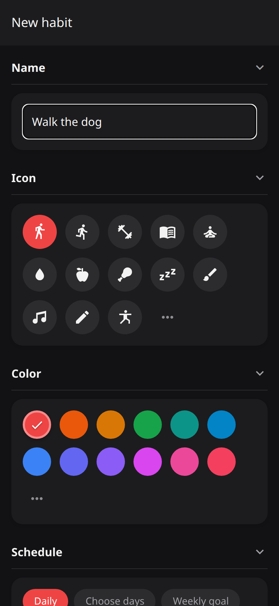
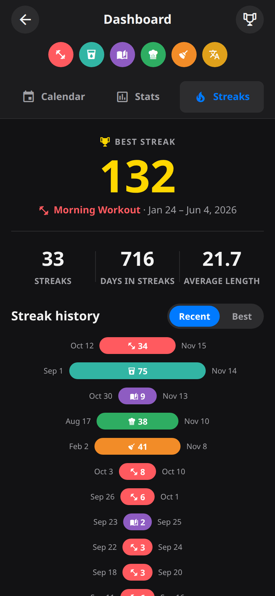
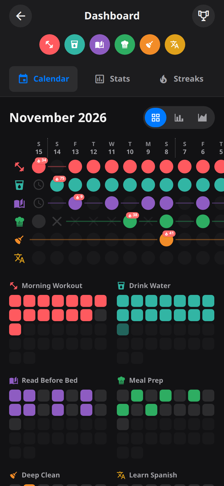
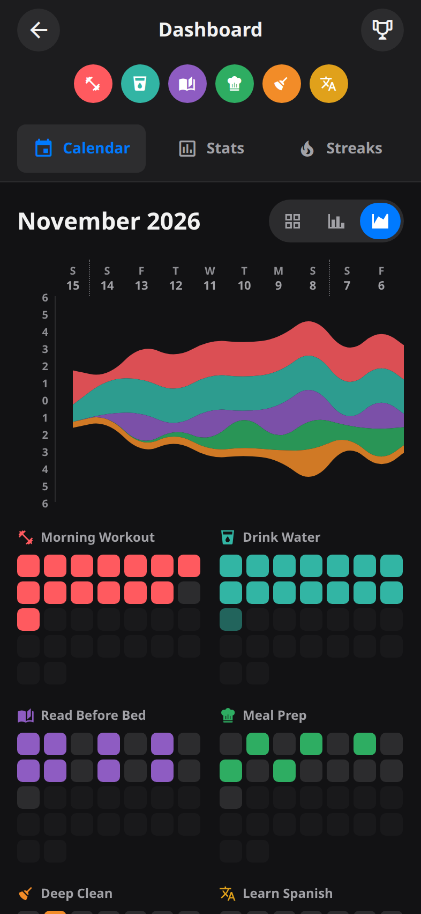
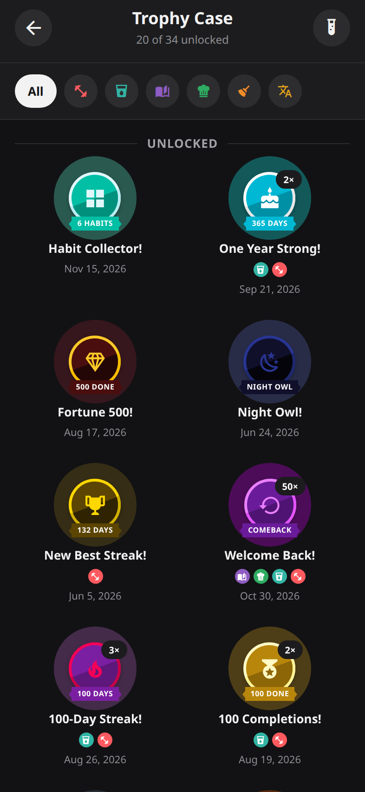

For Android
Build streaks worth celebrating.
A playful habit tracker that turns small daily wins into visible streaks, milestones, and a Trophy Case — while your data stays on your device.
No account. No cloud. No subscription.
Make it yours.
Name it, pick an icon and color, then choose daily, specific days, or a weekly or monthly goal. Reminders stay optional.

How far it's gone.
Current and best streaks, plus the full history of every run — not just today's number.

Which days matter.
Miss a day that wasn't due and the streak holds. Catch up early and it counts. Skip on purpose when you need to.

All of it at once.
A flowing view of every habit across the month, so the whole routine is visible in one glance.

What you've earned.
Milestones, perfect weeks, comebacks, and more — collectible progress without a complicated game on top.

Everything a streak needs.
Focused on the habit — not a to-do list wearing a streak counter.
- Flexible schedules — daily, chosen days, or days per week or month
- Multiple completions a day for habits with a real quota
- Fair streaks — non-due days don't break the chain
- Skip a day on purpose without losing progress
- Press-and-hold to complete, with a ring that fills in
- Achievements and a Trophy Case
- Dashboard calendars, charts, and streak history
- Custom icon and color for every habit
- Reminders from a gentle nudge to a persistent one
- Light and dark mode
- Export and import anytime
- No account, ads, tracking, or subscription
Keep it alive.
Your habits stay on your device. Leave your email and we'll invite you when testing opens.